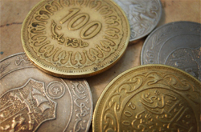

Al-Fudayl ibn ‘Iyaad was famous for his piety and worship, but he was not always a practising Muslim. In his early years, Al-Fudayl was an infamous highway robber; he would prowl in the night for victims on the road from Abu Ward to Sarakhas. Between these two cities was a small village in which lived a girl that Al-Fudayl was in love with. One night,out of desperation to be with her, Al-Fudayl climbed the wall of her home.......
|  |
Strong IntegrityAr-Rasheed, a first century ruler, once said to al-Fudayl ibn ‘Iyaad, "Admonish me. " Al-Fudayl said, "O Leader of the Faithful! Indeed your grandfather, Al-‘Abbaas, the uncle of the Prophet (may the peace and blessings of Allah be upon him), once went to the Prophet and said, 'O Messenger of Allah, appoint me to be a leader. ' The Messenger of Allah said, 'My uncle, indeed, being a....... Read more |